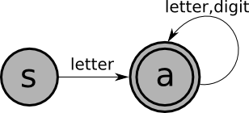
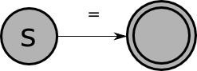
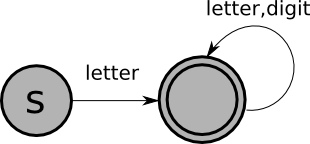
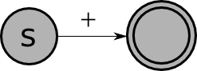
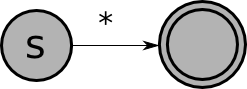
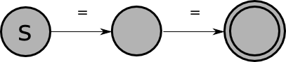
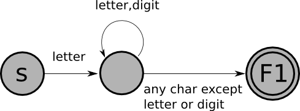
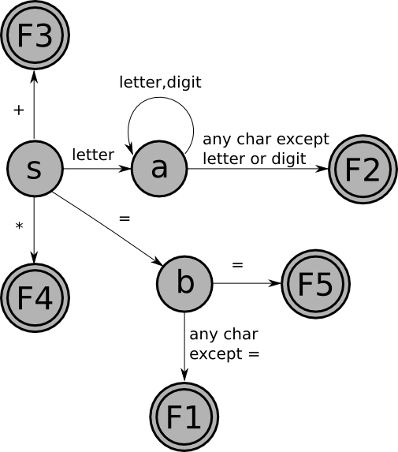

Recall that the job of the scanner is to translate the sequence of characters that is the input to the compiler to a corresponding sequence of tokens. In particular, each time the scanner is called it should find the longest sequence of characters in the input, starting with the current character, that corresponds to a token, and should return that token.
It is possible to write a scanner from scratch, but a more efficient and less error-prone approach is to use a scanner generator like lex or flex (which produce C code), or jlex (which produces java code). The input to a scanner generator includes one regular expression for each token (and for each construct that must be recognized and ignored, such as whitespace and comments). Therefore, to use a scanner generator you need to understand regular expressions. To understand how the scanner generator produces code that correctly recognizes the strings defined by the regular expressions, you need to understand finite-state machines (FSMs).
A finite-state machine is similar to a compiler in that:
Here's an example of a finite-state-machine that recognizes Pascal identifiers (sequences of one or more letters or digits, starting with a letter):
In this picture:
An input string is accepted by a FSM if:
The following strings are in the language of the FSM shown above:
xtmp2XyZzyposition27123a?13apples
Write a finite-state machine that accepts e-mail addresses, defined as follows:
The following is a finite-state machine that accepts integer literals with an optional + or - sign:
An FSM is a 5-tuple:
Here's a definition of
| + | - | ||
There are two kinds of FSM:
Example
Here is a non-deterministic finite-state machine that recognizes the same language as the second example deterministic FSM above (the language of integer literals with an optional sign):
Sometimes, non-deterministic machines are simpler than deterministic ones, though not in this example.
A string is accepted by a non-deterministic finite-state machine if there exists a sequence of moves starting in the start state, ending in a final state, that consumes the entire string. For example, here's what happens when the above machine is run on the input "+75":
| After scanning | Can be in these states | ||
| (nothing) | |||
| (stuck) | |||
| (stuck) | |||
| (stuck) | |||
It is worth noting that there is a theorem that says:
The most straightforward way to program a (deterministic) finite-state machine is to use a table-driven approach. This approach uses a table with one row for each state in the machine, and one column for each possible character. Table[j][k] tells which state to go to from state j on character k. (An empty entry corresponds to the machine getting stuck, which means that the input should be rejected.)
Recall the table for the (deterministic) "integer literal" FSM given above:
| + | - | ||
The table-driven program for a FSM works as follows:
Regular expressions provide a compact way to define a language that can be accepted by a finite-state machine. Regular expressions are used in the input to a scanner generator to define each token, and to define things like whitespace and comments that do not correspond to tokens, but must be recognized and ignored.
As an example, recall that a Pascal identifier consists of a letter, followed by zero or more letters or digits. The regular expression for the language of Pascal identifiers is:
| | | means "or" |
| . | means "followed by" |
| * | means zero or more instances of |
| ( ) | are used for grouping |
Often, the "followed by" dot is omitted, and just writing two things next to each other means that one follows the other. For example:
In fact, the operands of a regular expression should be single characters or the special character epsilon, meaning the empty string (just as the labels on the edges of a FSM should be single characters or epsilon). In the above example, "letter" is used as a shorthand for:
To understand a regular expression, it is necessary to know the precedences of the three operators. They can be understood by analogy with the arithmetic operators for addition, multiplication, and exponentiation:
| Regular Expression Operator | Analogous Arithmetic Operator | Precedence |
| | | plus | lowest precedence |
| . | times | middle |
| * | exponentiation | highest precedence |
So, for example, the regular expression:
Describe (in English) the language defined by each of the following regular expressions:
An integer literal with an optional sign can be defined in English as:
Every regular expression defines a language: the set of strings that match the expression. We will not give a formal definition here, instead, we'll give some examples:
| Regular Expression | Corresponding Set of Strings | |
| |
{""} | |
| a | {"a"} | |
| a.b.c | {"abc"} | |
| a | b | c | {"a", "b", "c"} | |
| (a | b | c)* | {"", "a", "b", "c", "aa", "ab", ..., "bccabb" ...} |
There is a theorem that says that for every regular expression, there is a finite-state machine that defines the same language, and vice versa. This is relevant to scanning because it is usually easy to define the tokens of a language using regular expressions, and then those regular expression can be converted to finite-state machines (which can actually be programmed).
For example, let's consider a very simple language: the language of assignment statements in which the left-hand side is a Pascal identifier (a letter followed by one or more letters or digits), and the right-hand side is one of the following:
| Token | Regular Expression |
| ASSIGN | "=" |
| ID | letter (letter | digit)* |
| PLUS | |
| TIMES | |
| EQUALS | "="."=" |
These regular expressions can be converted into the following finite-state machines:
| ASSIGN: |  |
| ID: |  |
| PLUS: |  |
| TIMES: |  |
| EQUALS: |  |
Given a FSM for each token, how do we write a scanner? Recall that the goal of a scanner is to find the longest prefix of the current input that corresponds to a token. This has two consequences:
Furthermore, remember that regular expressions are used both to define tokens and to define things that must be recognized and skipped (like whitespace and comments). In the first case a value (the current token) must be returned when the regular expression is matched, but in the second case the scanner should simply start up again trying to match another regular expression.
With all this in mind, to create a scanner from a set of FSMs, we must:
For example, the FSM that recognizes Pascal identifiers must be
modified as follows:

with the following table of actions:
And here is the combined FSM for the five tokens (with the actions noted below):

with the following table of actions:
We can convert this FSM to code using the table-driven technique described above, with a few small modifications:
| + | * | = | EOF | |||
| return PLUS | return TIMES | |||||
| put back 1 char; return ID | put back 1 char; return ID | put back 1 char; return ID | return ID | |||
| put back 1 char; return ASSIGN | put back 1 char; return ASSIGN | return EQUALS | put back 1 char; return ASSIGN | put back 1 char; return ASSIGN | return ASSIGN |
Suppose we want to extend the very simple language of assignment statements defined above to allow both integer and double literals to occur on the right-hand sides of the assignments. For example:
What new tokens would have to be defined? What are the regular expressions, the finite-state machines, and the modified finite-state machines that define them? How would the the "combined" finite-state machine given above have to be augmented?